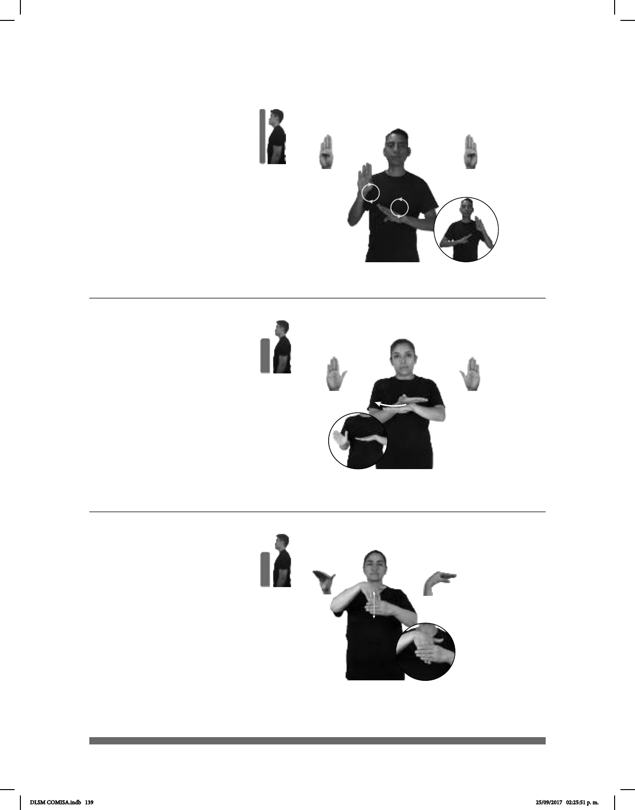

139
Seña: SB
MD y MB B-P.1
MD y MB palmas
hacia afuera.
MD y MB a la altura
del pecho.
La MD y la MB se
mueven formando círculos
alternadamente.
sust. f. Ciencia que
trata de los seres vivos
considerando su estructura,
funcionamiento, evolución,
distribución y relaciones.
(B-P 85)
LIBRO
allá
TEMA SOBRE BIOLOGÍA
El libro trata sobre biología.
(B-P 86)
SUÉTER BLANCO pro-YO PERDER
Perdí el suéter blanco.
(B-P 87)
dm-SANTIAGO MONEDA GUARDAR-BOLSILLO
Santiago guarda en su bolsillo una moneda.
Seña: SB
MD y MB B-P.2
MD la palma
inicia hacia arriba y termina oblicua
hacia la izquierda y hacia afuera.
MB palma hacia abajo.
A la altura del pecho.
MD sobre MB, del centro a la
derecha.
MD recto.
adj. Dicho de un color:
semejante al de la nieve o la leche
y que corresponde al de la luz solar
no descompuesta en los varios
colores del espectro.
Seña: SB
MD B-P.7, MB C.6
MD palma hacia adentro.
MB palma hacia adentro.
MD detrás de MB, del
pulgar a su lateral. MB a la altura del
pecho.
MD recto.
Simula la acción de
meter la mano al bolsillo.
sust. m. Bolsa pequeña con
prenda de vestir o se añade a otros
objetos.
DLSM COMISA.indb 139 25/09/2017 02:25:51 p. m.